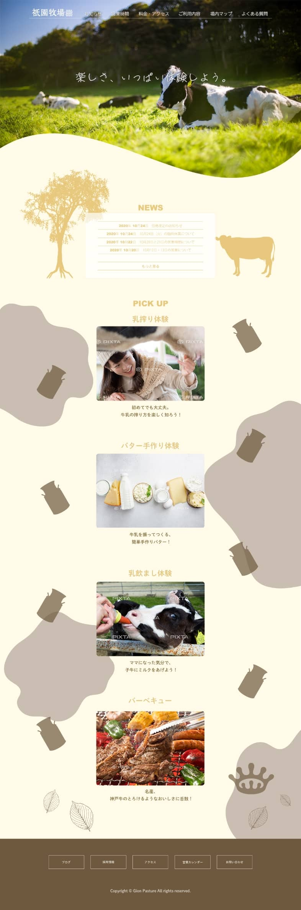
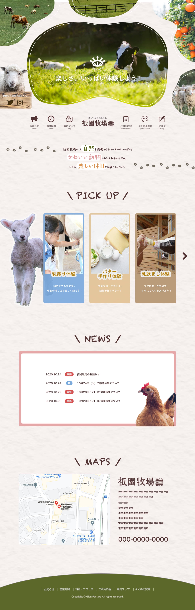
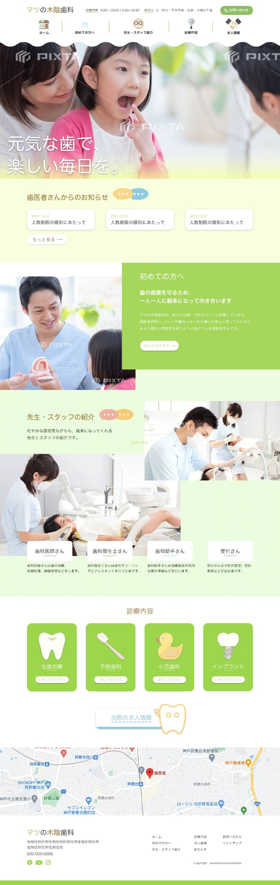
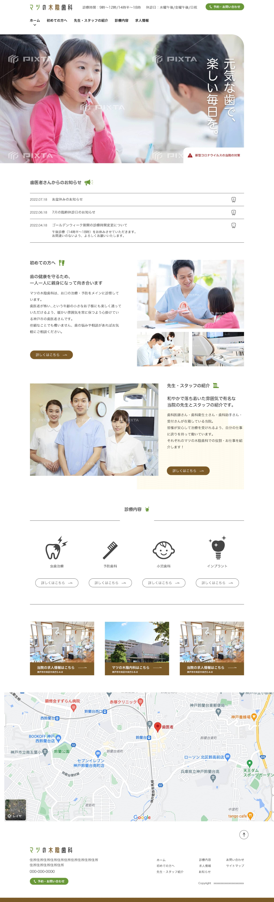
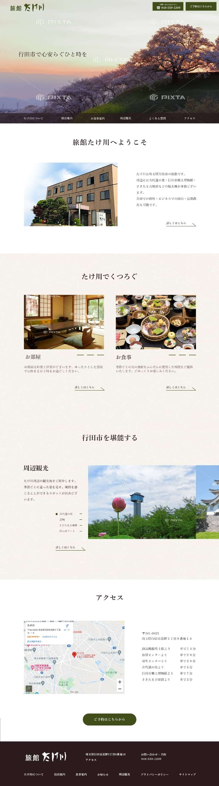
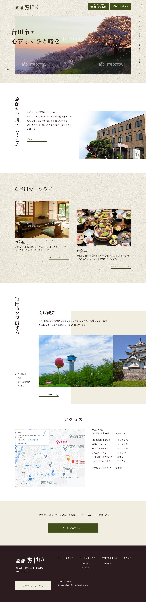
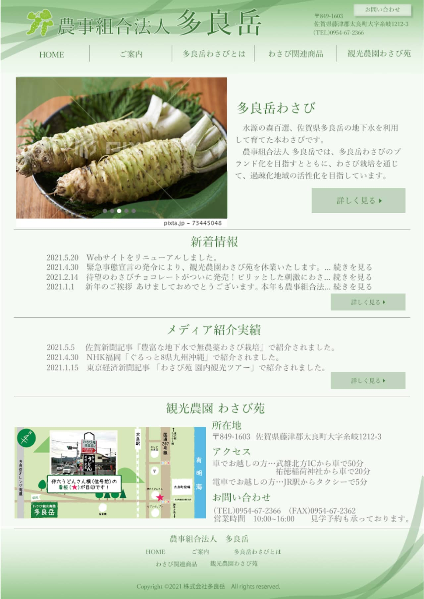

先輩たちの声
“今”のWEB専攻ってどんな感じ？
学生視点ならではのリアルな声をお届け！
1年生の時に作ったサイトを改めて作り直した、
作品ビフォーアフターも要チェック！
体験談
あなたが聞きたいリアルなweb専攻が見れるかも？
web専攻が見れるかも？
就活体験記
Web専攻の就活って？
現在、2年生は就活の真っ只中。
近年では、Web業界の需要はどんどん高まっており、無限大の可能性を秘めています。
そこで！就活を通してこそ気づいたWeb専攻の魅力や、私たちが感じたことをリアルにお伝えします！
実際に内定をもらった先輩たちの就活スケジュールも必見です！！
作品ビフォーアフター
WEB専攻の先輩たちが1年生の時に作ったサイト、見てみたくない？
もし1年生の時の課題をやり直すなら、こう直す！
WEB専攻に入ってから成長できたよ！！
-
牧場サイト制作課題
BEFORE
文字を読ませるレイアウトではなく、コンテンツも縦並びにしてしまい、時間がない中で急いでデザインしたと感じ取れるものになってしまったと思います。
AFTER
-

- web専攻 O.Hさん
- 動物の写真をたくさん使って、キャッチコピーのワクワクさを表現したよ！羊が可愛いでしょ〜〜
-

- web専攻 K.Yさん
- メインビジュアルがとにかく可愛い！文字のあしらいが可愛いだけでなく読みやすくなっていてさすが！！
-

- web専攻 M.Tさん
- リード文の見せ方も上手で、見た人がワクワクするようなサイトにレベルアップしたね！！
-

- web専攻 M.Nさん
- 写真の切り抜きが動きが出ていて可愛くて楽しい！背景にテクスチャが敷かれているのもデザインレベルたかし…
-

- web専攻 N.Yさん
- アイコンの使い方が凄く良い！メインビジュアルに動物がSNSを紹介してるのも可愛いうえに情報がまとまってて完璧〜！
-
- web専攻 O.Hさん
- やったーーーーー！！この１年で丁寧に作ることの大切さを学んだよ！
-
-
歯医者サイト制作課題
BEFORE
イラストを使用したり、色数を多めに使ったことで、歯医者というイメージより幼稚園とか連想させるイメージになってしまったかなと感じています。
AFTER
-
- web専攻 M.Nさん
- 色数を減らしシンプルにデザインしつつも、アイコンをポイントに使用したり丸ゴシックを使うことで柔らかめな雰囲気を！
-
- web専攻 K.Yさん
- 色数が抑えられて洗練された印象！変更後のカラーも暖かみが伝わって素敵です！
-
- web専攻 M.Tさん
- アイコンやイラストも含めて、全体的にトーンが統一されてスッキリしたね！！歯医者感アップしてよき！信頼感ある！
-
- web専攻 O.Hさん
- ロゴの清潔感半端ない！松の木に合わせた配色が素敵！レイアウトも見やすい！さすが〜〜！！
-
- web専攻 N.Yさん
- シンプルにしたことで視線誘導がレベルアップしてる！より情報にまとまりが出て良い〜！
-
- web専攻 M.Nさん
- やちゃ〜！過去のデザイン見るのは辛かったけど、どこを直そうかしっかり向き合うことで自分の成長を感じることができた！！
-
-
旅館サイトリデザイン
BEFORE
コピーの大きさやレイアウトが単調で、もう少しジャンプ率に気をつけるとメリハリのあるサイトになったのになと改めて見て思いました。
AFTER
-
- web専攻 K.Yさん
- 余白と整列をアップデート！揃えるべき所を抑えつつ目線の移り変わりにリズムがあるサイトを意識したよ！
-
- web専攻 O.Hさん
- コンテンツずらしてもまとまりがあるのは成長感じるぜｷﾗｷﾗ縦文字入れるのかっこいい〜〜すき〜〜〜！！！！
-
- web専攻 M.Tさん
- デザインだけでなく、使いやすさもよりアップして全体的にレベルが上がっていいかんでぃ〜〜〜！！！！
-
- web専攻 M.Nさん
- メニューを縦並びや、写真の位置を工夫することでサイト全体に動きが出ていて見やすい！背景のテクスチャ、たけ川感すぎょし…
-
- web専攻 N.Yさん
- メインビジュアルのクオリティが凄く上がってる！！！余白の使い方が良くて、全体の抜け感が良い〜！
-
- web専攻 K.Yさん
- 幸〜〜！！使いやすさとか写真の位置のこと気づいてもらえて嬉しい！縦文字がアクセントになって良かった！
-
-
わさびサイトリデザイン
BEFORE
この頃の私は、参考サイトという概念を知りませんでした。ミジンコみたいな知識とイメージだけで作った古代遺物です。供養させていただきます！！！！
AFTER

-
- web専攻 M.Tさん
- え？私めっちゃ成長してるよな？？？？ちなみにメインの参考サイトは「丸亀製麺」と「然ながらみかん」です！
-
- web専攻 O.Hさん
- ナビゲーションの左固定の発想は当時出てこないよね…ワサビ食べたくなるサイトですごくいい！素敵完璧皇帝様！！
-
- web専攻 K.Yさん
- 各コンテンツに使われてる背景がわさび感増し増しで色味も絶妙やしさすが！ナビゲーションの白背景で全体が引き締まって見えるのも良いなー！
-
- web専攻 M.Nさん
- 優しい色合いで、フォントもサイトのイメージにはちゃめちゃにマッチ！！ロゴと見出しの装飾もシンプルで抜群にすこ…
-
- web専攻 N.Yさん
- ロゴの一部を見出しの装飾や背景に使用することで、よりデザインに統一感が出てる！レベルアップしすぎ！
-
- web専攻 T.Mさん
- ヒャホー！！！マジでこの１年で成長できたなって感じる🎶
-
楽しいですか？
今までで一番苦労したことは？？
コーディング苦手だけどついていける？
時間割ってどんなの？
先生厳しい？
覚えることいっぱいある？
授業についていけるか不安
課題多いですか？
グラフィック専攻との違いは？？
絵が描けないのですが大丈夫ですか？
就職先何がありますか？
1年生の時苦手だったことありますか？
一番好きな授業は？？
今のうちにやっておいた方がいいことはなんですか？
WEB専攻でよかったと思うことは何ですか？
WEB専攻に決めたきっかけは？
グラフィックもできる？
今だから言える話は？